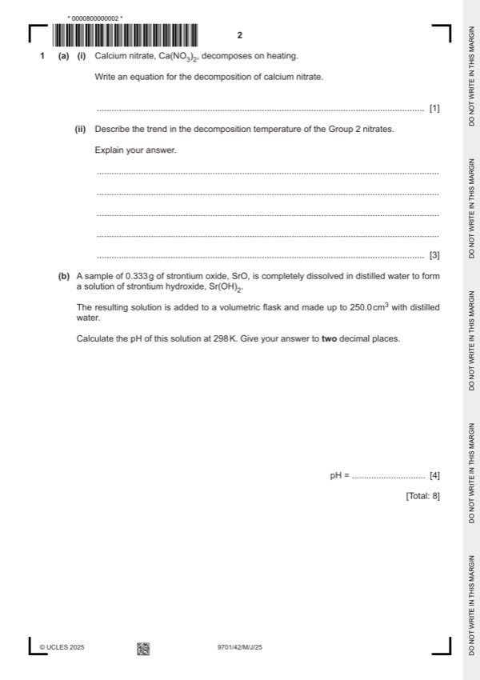

Question 1

Original paper page 2
Part 1(a)(i) — solution
- Ca(NO3)2 → CaO + 2NO2 + ½O2[1] 1
Mark points
- Ca(NO3)2 → CaO + 2NO2 + ½O2[1] 1
Part 1(a)(ii) — solution
- [M1] temperature increases down the group 3
- [M2] ionic radius OR size of cation / M(2)+ AND increases
- [M3] less polarisation / less distortion AND of anion / nitrate ion OR less weakening of NO bond / harder to break NO bond
Mark points
- [M1] temperature increases down the group 3
- [M2] ionic radius OR size of cation / M(2)+ AND increases
- [M3] less polarisation / less distortion AND of anion / nitrate ion OR less weakening of NO bond / harder to break NO bond
Part 1(b) — solution
Answer: OR pOH = –log[OH–] = 1.59 · OR pH = 14 –1.59 = 12.41 must be 2 dp
- [M1] moles of SrO = 0.333 103.6 = 3.214 10-3 AND moles of Sr(OH)2 = 3.214 10-3 OR 9 / 2800 4
- [M2] moles of OH– in 250 cm3 = 3.214 10-3 2 = 6.429 10-3 AND moles of OH– in 1 dm3 = 6.429 10-3 4 = 0.0257
- [M3] [H+] = 1.00 10–14 0.0257 = 3.89 10–13
- [M4] pH = –log(3.89 10–13) = 12.41 must be to 2dp
Mark points
- [M1] moles of SrO = 0.333 103.6 = 3.214 10-3 AND moles of Sr(OH)2 = 3.214 10-3 OR 9 / 2800 4
- [M2] moles of OH– in 250 cm3 = 3.214 10-3 2 = 6.429 10-3 AND moles of OH– in 1 dm3 = 6.429 10-3 4 = 0.0257
- [M3] [H+] = 1.00 10–14 0.0257 = 3.89 10–13
- [M4] pH = –log(3.89 10–13) = 12.41 must be to 2dp